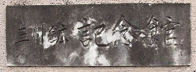
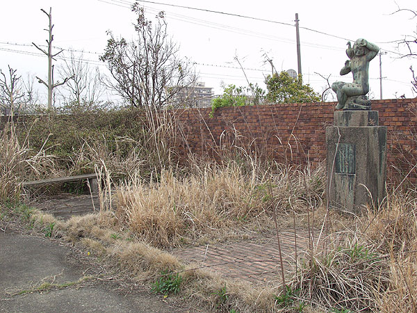
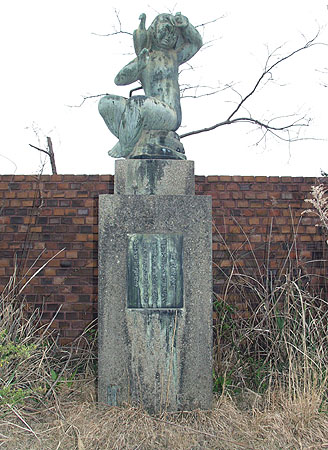
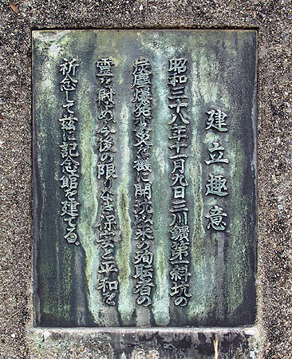
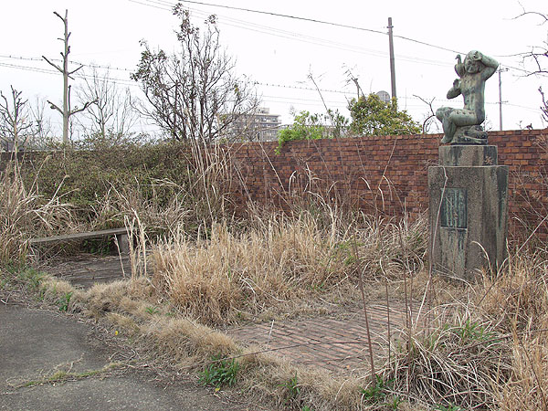
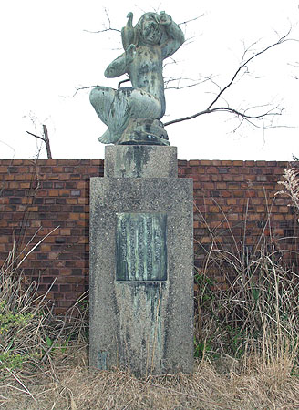
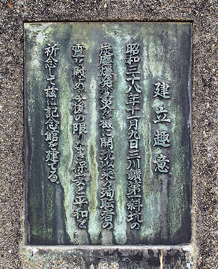
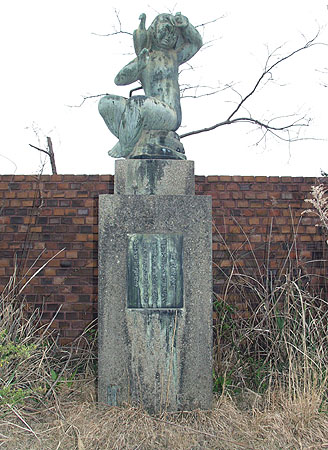
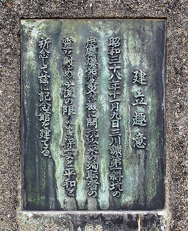
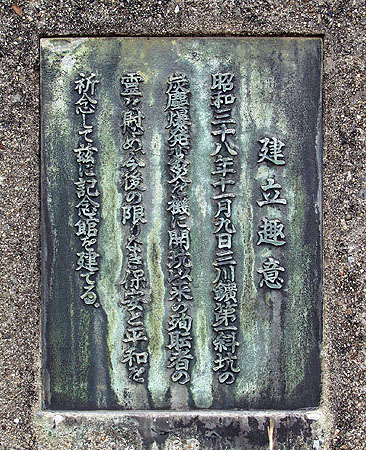

福岡県大牟田市の三井三池炭鉱三川鉱跡地、その諏訪川沿いの一角に「三川鉱記念館」 跡がある。 同所には、「昭和38年11月9日三川鉱第一斜坑の炭塵爆発変災を機に開坑以来の殉職者の霊を慰め今後の限りなき 保安と平和を祈念して茲に記念館を建てる」と書かれた祈念像がいまも残されている。 死者458人、ＣＯ中毒患者約839人の犠牲者を出す、炭鉱史上戦後最大の大惨事に対し、三池労組は「大惨事があっ た第一斜坑が見える場所に祈念像を建てよ」と会社に強く迫り、同記念館が建てられたという。 しかしあれから44年、三池炭鉱はすでになく、「三川鉱記念館」跡も忘れられたかのように荒れ果てたままになっている。 炭鉱で亡くなった被害者の霊を慰めるためにせっかく建てられた記念館が、現在はすでに取り壊され、このように放置されてい ることが不思議でならない。三井の無責任さに怒りを感じると共に、三池労組と新労のふがいなさに失望を感じないではいられ ない。新労組合員の被害者の方がむしろ多かったと聞く。
三川鉱記念館跡  三川鉱記念館表札  三川鉱記念館跡 寂りょうとした風景のなかに残る祈念像。それは「残こされている」というよりも、「単にただ残って いるだけ」という言い方が正しいのかも知れない。 願わくばここに記念館が再建されることを望む。それがかなわないのならばせめてこのまま残しておいてほしいと願う。  祈念像  建立趣意 BACK
三川鉱記念館表札  三川鉱記念館跡 寂りょうとした風景のなかに残る祈念像。それは「残こされている」というよりも、「単にただ残って いるだけ」という言い方が正しいのかも知れない。 願わくばここに記念館が再建されることを望む。それがかなわないのならばせめてこのまま残しておいてほしいと願う。  祈念像  建立趣意 BACK
三川鉱記念館跡 寂りょうとした風景のなかに残る祈念像。それは「残こされている」というよりも、「単にただ残って いるだけ」という言い方が正しいのかも知れない。 願わくばここに記念館が再建されることを望む。それがかなわないのならばせめてこのまま残しておいてほしいと願う。  祈念像  建立趣意 BACK
寂りょうとした風景のなかに残る祈念像。それは「残こされている」というよりも、「単にただ残って いるだけ」という言い方が正しいのかも知れない。 願わくばここに記念館が再建されることを望む。それがかなわないのならばせめてこのまま残しておいてほしいと願う。
祈念像  建立趣意 BACK
建立趣意 BACK